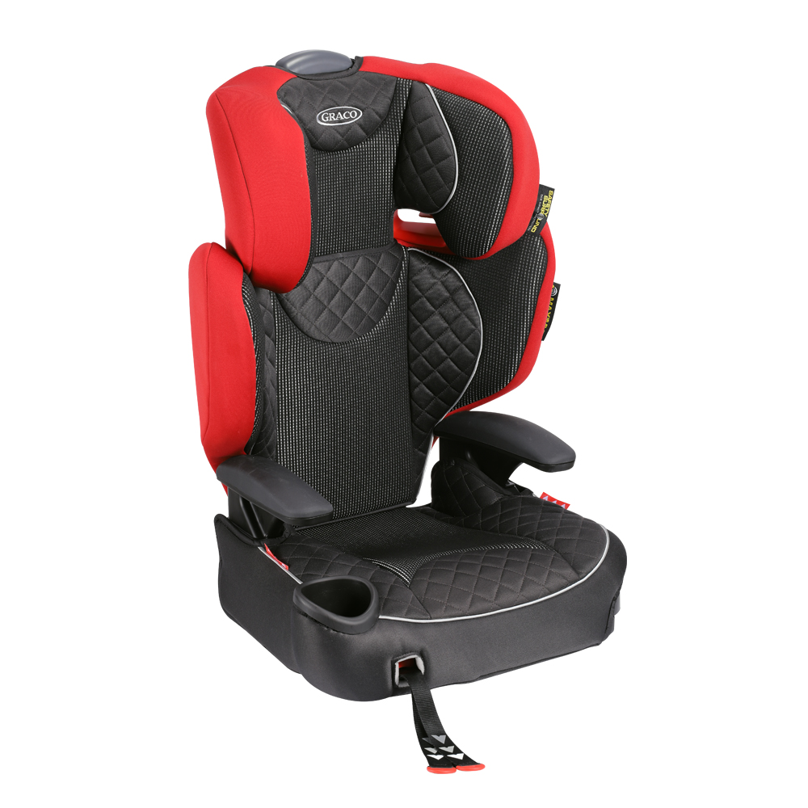
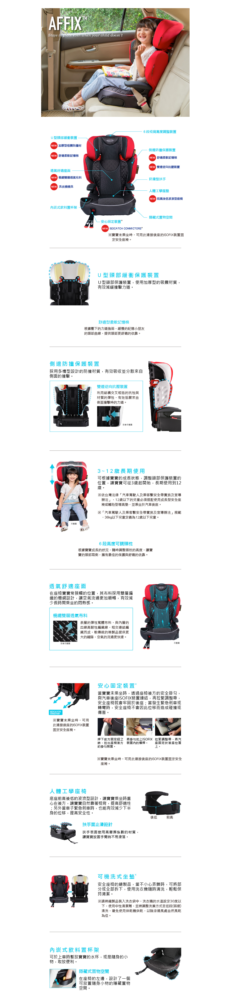

關於GRACO
嬰幼兒手推車
汽車安全座椅
生活用品
首頁
>
汽車安全座椅

AFFIX
嬰幼兒成長型輔助汽車安全座椅
加強頭部與側面的防撞結構，安全更升級！
頭部兩側與身體側面，都配備的加厚的防撞材， 除更有效吸收撞擊的力道，頭部的內側還有記憶棉，讓小朋友頭靠著時更好的支撐；
６段的椅背高度調整，更細緻的配合小朋友成長，做出最適合調整；
最新設計的安心固定裝置，在小朋友未乘坐時，可讓座椅與後座結合，不會產生位移。
顏色
適用範圍
3歲左右～12歲 (15kg ～36kg)
尺寸 mm
W493xD420xH684 mm
安全性
重量
5.2 KG
型號
紅桃皇后 ： #2103987
黑桃國王 ： #2103986
